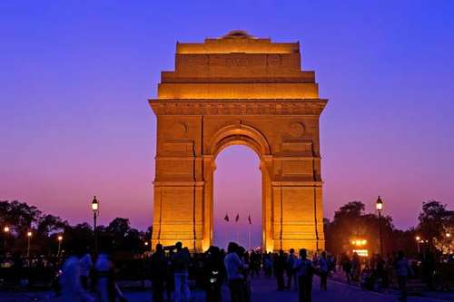

********
The India Gate (originally called the All India War Memorial) is a war memorial located astride the Rajpath, on the eastern edge of the "ceremonial axis" of New Delhi, India, formerly called Kingsway. India Gate is a memorial to 70,000 soldiers of the British Indian Army who died in the period 1914–21 in the First World War, in France, Flanders, Mesopotamia, Persia, East Africa, Gallipoli and elsewhere in the Near and the Far East, and the Second Anglo-Afghan War. 13,300 servicemen's names, including some soldiers and officers from the United Kingdom, are inscribed on the gate.The India Gate, even though a war memorial, evokes the architectural style of the triumphal arch like the Arch of Constantine, outside the Colosseum in Rome, and is often compared to the Arc de Triomphe in Paris, and the Gateway of India in Mumbai.It was designed by Sir Edwin Lutyens.
India Gate
********
In 1972, following the Bangladesh Liberation war, a small simple structure, consisting of a black marble plinth, with a reversed rifle, capped by a war helmet, bounded by four eternal flames, was built beneath the soaring Memorial Archway. This structure, called Amar Jawan Jyoti, or the Flame of the Immortal Soldier, since 1971 has served as India's Tomb of the Unknown Soldier. India Gate is counted among the largest war memorials in India. Every Republic day, the Prime Minister of India visits this place in order to pay their tributes to the Amar Jawan Jyoti. After that the Republic day parade starts.